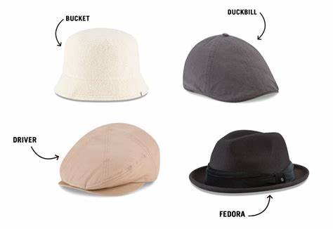

Gorra plana diseñada para proteger la vista y el cuero cabeludo de los rayos del sol, de igual manera usada como publicidad, es 100% acrilico plana, con frente rigido, unitalla y broche plastico ajustable.Gorra plana diseñada para proteger la vista y el cuero cabeludo de los rayos del sol, de igual manera usada como publicidad, es 100% acrilico plana, con frente rigido, unitalla y broche plastico ajustable. GORRAS CERRADAS Esta es la iconica, la tradicional "fitted o gorra a la medida:tiene estructura (es decir, es ligeramente rigida, corona alta,visera plana que puede curvase y esta fabricada con sies piezas triangulares de tela que juntas forman toda la seccion que cubre tu cabeza). 